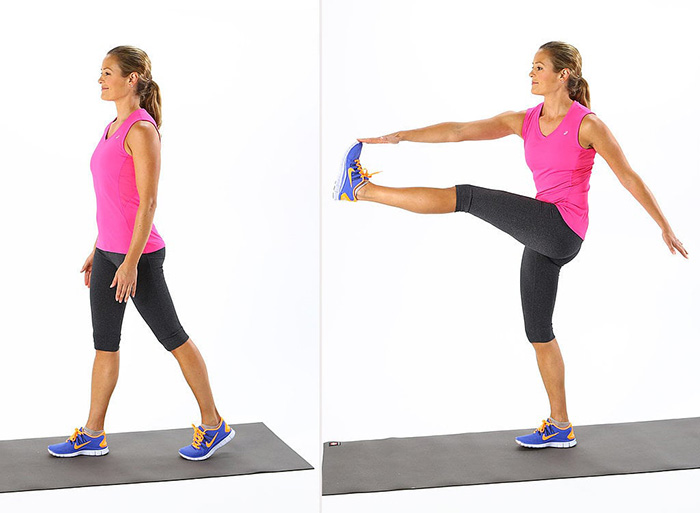

Toy soldier

ยืนตัวตรง ไม่งอไปข้างหน้าหรือโค้งไปด้านหลัง เกร็งกล้ามเนื้อแกนกลางลำตัวกางขากว้างประมาณสะโพก ก้าวเท้ามาด้านหน้าแล้วเตะขาขวาขึ้นมาด้านบนยื่นแขนซ้ายไปข้างหน้า
ให้เท้าขวาแตะกับมือซ้าย เกร็งนิ้วโป้งไว้ แล้วทำสลับซ้าย-ขวา กล้ามเนื้อที่ได้: กล้ามเนื้อต้นขา (quadriceps), กล้ามเนื้อต้นขาส่วนหลัง (hamstring),
กล้ามเนื้อที่ใช้งอสะโพก (Hip Flexors) ,แกนกลางลำตัว (core muscle), แขน, หัวไหล่